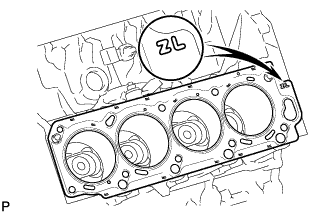
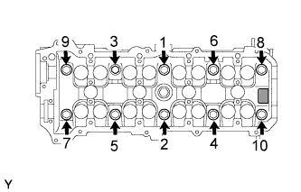
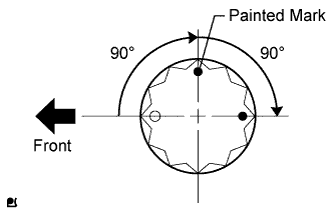
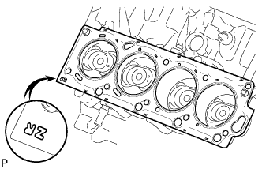
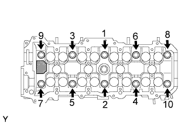
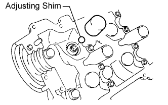
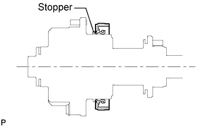
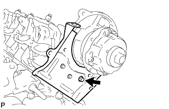
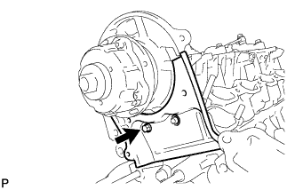

CYLINDER HEAD GASKET > INSTALLATION |
| 1. INSPECT CYLINDER HEAD SET BOLT |
 |
Using a vernier caliper, measure the thread outside diameter of the bolt.
| Item | Specified Condition |
| Intake side | 82 mm (3.23 in.) |
| Exhaust side | 86 mm (3.39 in.) |
| 2. INSPECT CYLINDER HEAD SUB-ASSEMBLY |
 |
Using a precision straightedge and feeler gauge, measure the surfaces contacting the cylinder block and manifolds for warpage.
| Item | Specified Condition |
| Cylinder block side | 0 to 0.05 mm (0 to 0.00197 in.) |
| Intake manifold side | 0 to 0.08 mm (0 to 0.00315 in.) |
| Exhaust manifold side | 0 to 0.08 mm (0 to 0.00315 in.) |
 |
Using a dye penetrant, check the combustion chamber, intake ports, exhaust ports and cylinder block surface for cracks.
If the cylinder head is cracked, replace it.
| 3. INSTALL CYLINDER HEAD GASKET LH |
 |
Clean the cylinder block and cylinder head with solvent.
Place a new cylinder head gasket in position on the cylinder block.
| 4. INSTALL CYLINDER HEAD LH |
 |
Check that the timing mark of the crankshaft timing pulley is in the position shown in the illustration, and that the piston is below the TDC of compression.
Install the cylinder head with the exhaust manifold to the cylinder block.
Apply a light coat of engine oil to the threads and under the heads of the cylinder head bolts.
Step 1:
Set the plate washer to the cylinder head bolt.
 |
Install and uniformly tighten the 10 cylinder head bolts and plate washers in the sequence shown in the illustration.
Step 2:
 |
Mark the cylinder head bolt head with paint as shown in the illustration.
Tighten the cylinder head bolts 90° in the sequence shown in step 1.
Step 3:
Tighten the cylinder head bolts another 90° in the sequence shown in step 1.
Check that the painted marks are now facing rearward.
| 5. INSTALL CYLINDER HEAD GASKET |
 |
Clean the cylinder block and cylinder head with solvent.
Place a new cylinder head gasket in position on the cylinder block.
| 6. INSTALL CYLINDER HEAD SUB-ASSEMBLY |
Install the cylinder head with the exhaust manifold to the cylinder block.
Apply a light coat of engine oil to the threads and under the heads of the cylinder head bolts.
Step 1:
Set the plate washer to the cylinder head bolt.
 |
Install and uniformly tighten the 10 cylinder head bolts and plate washers in the sequence shown in the illustration.
Step 2:
Mark the cylinder head bolt head with paint as shown in the illustration.
Tighten the cylinder head bolts 90° in the sequence shown in step 1.
Step 3:
Tighten the cylinder head bolts another 90° in the sequence shown in step 1.
Check that the painted marks are now facing rearward.
| 7. INSTALL VALVE LIFTER |
 |
Apply a light coat of engine oil to the valve lifters and adjusting shims.
Install the valve lifters and shims to the cylinder head.
Check that the valve lifter rotates smoothly by hand.
| 8. INSTALL CAMSHAFT SETTING OIL SEAL |
Apply MP grease to the lip of a new oil seal.
 |
Insert the oil seal into the camshaft timing tube until it reaches the stopper.
| 9. INSTALL CAMSHAFT DRIVE GEAR |
 |
Align the timing tube knock pin with the knock pin groove of the drive gear, and temporarily install the drive gear with the 4 bolts.
Using SST and a 5 mm hexagon wrench, uniformly tighten the 4 bolts in several steps, in the sequence shown in the illustration.
| 10. INSTALL CAMSHAFT TIMING TUBE ASSEMBLY |
 |
Mount the hexagonal portion of the camshaft in a vise.
Apply a light coat of engine oil to the camshaft and camshaft timing tube.
 |
Align the camshaft knock pin with the knock pin hole of the timing tube, and push the timing tube by hand until the camshaft knock pin touches the bottom of the timing tube knock pin hole.
Using a 10 mm socket hexagon wrench, install the bolt.
Install the seal washer and screw plug.
| 11. INSTALL CAMSHAFT |
Install the camshaft (Click here).
| 12. INSTALL REAR TIMING BELT PLATE LH |
 |
Install the timing belt plate with the bolt.
| 13. INSTALL REAR NO. 2 TIMING BELT PLATE LH |
 |
Install the timing plate with the 2 bolts.
| 14. INSTALL REAR TIMING BELT PLATE RH |
 |
Install the timing belt plate with the bolt.
| 15. INSTALL REAR NO. 2 TIMING BELT PLATE RH |
 |
Install the timing plate with the 2 bolts and stud bolt.
| 16. INSTALL REAR WATER BY-PASS JOINT |
  |
Install 2 new gaskets and the water by-pass joint with the 4 nuts.
| 17. INSTALL WATER BY-PASS PIPE SUB-ASSEMBLY |
Apply soapy water to the O-ring.
Install a new O-ring to the water by-pass pipe.
 |
Push in the water by-pass pipe.
Install the water by-pass pipe with the bolt.
Connect the 2 vacuum switching valve hoses to the water by-pass pipe clamp.
Connect the wire harness clamp.
Connect the connector.
| 18. INSTALL FRONT WATER BY-PASS JOINT |
 |
Install 2 new gaskets and the water by-pass joint with the 4 nuts.
| 19. INSTALL WATER INLET HOUSING |
 |
Apply soapy water to a new O-ring and install it to the water inlet housing.
Apply seal packing in a continuous line to the places shown in the illustration.
 |
Temporarily install the water inlet housing with the 2 bolts.
| Item | Length |
| Bolt A | 77 mm (3.03 in.) |
| Bolt B | 22 mm (0.866 in.) |
| 20. INSTALL NO. 2 AIR SWITCHING VALVE ASSEMBLY (w/ Secondary Air Injection System) |
 |
Install a new gasket and the No. 2 air switching valve to the rear water by-pass joint with the 2 bolts.
Connect the vacuum switching valve hose to the No. 2 air switching valve.
| 21. INSTALL NO. 1 AIR SWITCHING VALVE ASSEMBLY (w/ Secondary Air Injection System) |
 |
Install a new gasket and the No. 1 air switching valve to the rear water by-pass joint with the 2 bolts.
Connect the vacuum switching valve hose to the No. 1 air switching valve.
| 22. INSTALL NO. 3 AIR TUBE (w/ Secondary Air Injection System) |
 |
Install a new gasket and connect the No. 3 air tube to the exhaust manifold with the 2 nuts.
Install a new gasket and connect the No. 3 air tube to the No. 2 air switching valve with the 2 bolts.
| 23. INSTALL AIR TUBE SUB-ASSEMBLY RH (w/ Secondary Air Injection System) |
 |
Install a new gasket and connect the air tube to the exhaust manifold with the 2 nuts.
Install a new gasket and connect the air tube to the No. 1 air switching valve with the 2 bolts.
| 24. INSTALL INTAKE MANIFOLD |
Install the intake manifold (Click here).
| 25. CONNECT FRONT EXHAUST PIPE ASSEMBLY |
Install the exhaust manifold RH with the bolt.
Install the 2 gaskets to the front exhaust pipe and connect the front exhaust pipe to the exhaust manifold RH and center exhaust pipe. Then install the 3 nuts and 2 bolts.
Connect the air fuel ratio sensor connector.
Connect the heated oxygen sensor connector.
Attach the heated oxygen sensor wire clamp.
| 26. CONNECT FRONT NO. 2 EXHAUST PIPE ASSEMBLY |
Install the exhaust manifold LH with the bolt.
Install the 2 gaskets to the front No. 2 exhaust pipe and connect the front No. 2 exhaust pipe to the exhaust manifold LH and center exhaust pipe. Then install the 3 nuts and 2 bolts.
Connect the air fuel ratio sensor connector.
Connect the heated oxygen sensor connector.
| 27. ADD ENGINE OIL |
Install a new gasket and the drain plug.
Add new engine oil.
| Oil Grade | Oil Viscosity (SAE) |
| API grade SL "Energy-Conserving", SM "Energy-Conserving" or ILSAC multigrade engine oil | 10W-30 (10W-30 is best choice for fuel economy and good starting in cold weather). |
| API grade SL or SM multigrade engine oil | 10W-30 |
| Item | Specified Condition |
| Drain and refill with oil filter change | 6.2 liters (6.6 US qts, 5.5 Imp. qts) |
| Drain and refill without oil filter change | 5.7 liters (6.0 US qts, 5.0 Imp. qts) |
| Dry fill | 7.1 liters (7.5 US qts, 6.2 Imp. qts) |
| 28. ADD ENGINE COOLANT |
Add engine coolant.
| Item | Specified Condition | |
| w/o Transmission oil cooler | w/o Rear Heater | 13.4 liters (14.2 US qts, 11.8 Imp. qts) |
| w/ Rear Heater | 16.3 liters (17.2 US qts, 14.3 Imp. qts) | |
| w/ Transmission oil cooler | w/o Rear Heater | 14.1 liters (14.9 US qts, 12.4 Imp. qts) |
| w/ Rear Heater | 16.9 liters (17.9 US qts, 14.9 Imp. qts) | |
 |
Slowly pour coolant into the radiator reservoir until it reaches the F line.
Install the radiator reservoir cap.
Press the inlet and outlet radiator hoses several times by hand, and then check the coolant level. If the coolant level is low, add coolant.
Install the radiator cap.
Start the engine and warm it up until the thermostat opens.
Maintain the engine speed at 2000 to 2500 rpm.
Press the inlet and outlet radiator hoses several times by hand to bleed air.
Stop the engine, and wait until the engine coolant cools down to the ambient temperature.
 |
Check that the coolant level is between the F and L lines. If the coolant level is below the L line, repeat all of the procedures above. If the coolant level is above the F line, drain coolant so that the coolant level is between the F and L lines.
| 29. CONNECT CABLE TO NEGATIVE BATTERY TERMINAL |
| 30. INSPECT FOR OIL LEAK |
Start the engine. Make sure that there are no oil leaks from the area that was worked on.
| 31. INSPECT FOR COOLANT LEAK |
 |
Fill the radiator with coolant and attach a radiator cap tester.
Warm up the engine.
Using the radiator cap tester, increase the pressure inside the radiator to 123 kPa (1.3 kgf/cm2, 18 psi), and check that the pressure does not drop.
If the pressure drops, check the hoses, radiator and water pump for leaks. If no external leaks are found, check the heater core, cylinder block and head.
| 32. INSPECT FOR FUEL LEAK |
Connect the intelligent tester to the DLC3.
Turn the engine switch on (IG) and intelligent tester ON.
Enter the following menus: Powertrain / Engine and ECT / Active Test / Activate the Fuel Pump Speed Control.
Check that there are no fuel leaks after doing maintenance anywhere on the fuel system.
| 33. INSPECT FOR EXHAUST GAS LEAK |
| 34. CHECK ENGINE OIL LEVEL |
Warm up the engine, then stop the engine and wait for 5 minutes.
Check that the engine oil level is between the low level and full level marks on the dipstick.
If low, check for leakage and add oil up to the full level mark.
| 35. INSPECT IGNITION TIMING |
Warm up and stop the engine.
Allow the engine to warm up to a normal operating temperature.
When using the intelligent tester:
Connect the intelligent tester to the DLC3.
Start the engine and idle it.
Push the intelligent tester main switch ON.
Enter the following menus: Powertrain / Engine and ECT / Data List / Primary / IGN Advance.
Disconnect the intelligent tester from the DLC3.
 |
When not using the intelligent tester:
Remove the 2 nuts and V-bank cover.
Connect the tester probe of a timing light to the wire of the ignition coil connector for the No. 1 cylinder.
 |
Using SST, connect terminals 13 (TC) and 4 (CG) of the DLC3.
 |
Using the timing light, check the ignition timing.
Remove SST from the DLC3.
Disconnect the timing light from the engine.
Install the V-bank cover with the 2 nuts.
| 36. INSPECT ENGINE IDLE SPEED |
Warm up and stop the engine.
Allow the engine to warm up to a normal operating temperature.
When using the intelligent tester:
Connect the intelligent tester to the DLC3.
Race the engine at 2500 rpm for approximately 90 seconds.
Push the intelligent tester main switch ON.
Enter the following menus: Powertrain / Engine and ECT / Data List / Primary / Engine Speed.
Disconnect the intelligent tester from the DLC3.
 |
When not using the intelligent tester:
Using SST, connect a tachometer probe to terminal 9 (TAC) of the DLC3.
Race the engine at 2500 rpm for approximately 90 seconds.
Check the idle speed.
Disconnect the tachometer from the DLC3.
| 37. INSTALL COWL TOP VENTILATOR LOUVER SUB-ASSEMBLY |
Install the cowl top ventilator louver (Click here).
| 38. INSTALL NO. 2 ENGINE UNDER COVER |
 |
Install the No. 2 engine under cover with the 2 bolts.
| 39. INSTALL NO. 1 ENGINE UNDER COVER SUB-ASSEMBLY |
 |
Install the No. 1 engine under cover with the 10 bolts.
| 40. INSTALL FRONT FENDER SPLASH SHIELD SUB-ASSEMBLY RH |
| 41. INSTALL FRONT FENDER SPLASH SHIELD SUB-ASSEMBLY LH |
 |
Push in the clip indicated by the arrow in the illustration to install the fender splash shield.
Install the 3 bolts and screw.
| 42. INSPECT ENGINE COOLANT LEVEL |
 |
Check that the engine coolant level is between the L and F lines when the engine is cold.
If the engine coolant is low, check for leaks and add "TOYOTA Super Long Life Coolant" or similar high quality ethylene glycol based non-silicate, non-amine, non-nitrite and non-borate coolant with long-life hybrid organic acid technology to the F line.
Remove the radiator cap, and check that the coolant level is up to the radiator filler hole.